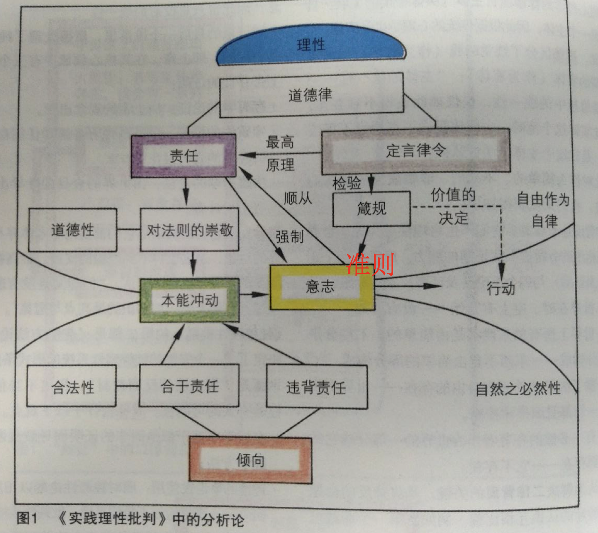
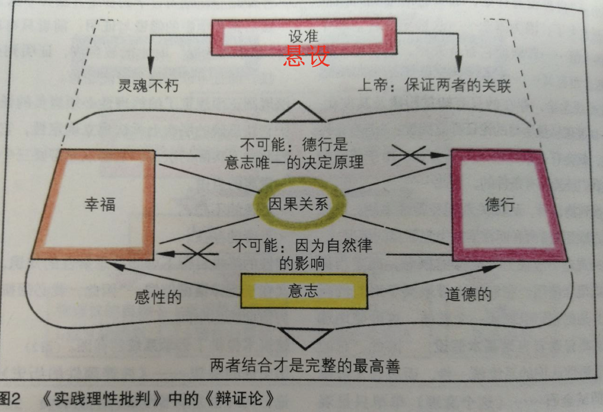

【这是大三时候的「《实践理性批判》导读」课程的笔记，算是自己接触到正经的「哲学」的第一门课程，课程容量不算多，但老师讲课很棒也学到了很多关于哲学的思想和概念，在此整理补发。】
第一周
课程介绍
伦理学分类：规范伦理学、元伦理学、应用伦理学
规范伦理学的三大形态：功利主义、义务论、德性（美德）伦理
德性：亚里士多德的中道、实践智慧、幸福
义务：强调与原则和规则的一致的行动，而不管结果；区别于德性论，德性伦理注重内在的动机而不是外部义务或责任，关注个人的性格特质。
康德道德哲学的特征
- 终身道德哲学的「先验」部分
- 自主概念作为伦理学的核心
- 人类能动者既有其本体的一面，也有现象的一面
- 道德作为绝对命令向人类能动者展现自身，并且正是这个绝对命令，连同其他关于世界的事实和我们具化的行动能力 agency 而衍生了那些具体的道德义务
- 道德产生了「最高的善」这一概念
第二周
概念辨析：
- 先验：先于经验而使经验（知识）成为可能的
- 先天：独立于经验便可以知道的
- 超验：超出经验所能知晓范围的
现象界 与 本体界
假言命令 与 定言命令（不论你的欲望如何，你都必须服从的命令。道德责任是从纯粹理性中衍生出来的。与你是否欲求无关。）
背景：介绍了休谟伦理学的特征
- 自然主义、经验主义和实验的「道德科学」
- 道德判断本质上是情感的判决 deliverances of sentiment
- 讨论范围广泛的、多种类型的德性，性格特质是其道德评判的首要对象
- 赋予伦理中的理性以非常有限的角色
- 伦理独立于宗教
第三周
进入康德，Kantian Doctrines
- 只有一个道德律（法则），所有义务都是其特殊的应用而已
- 这个单一的道德律适用于所有的理性存在物
- 这一法则是普遍的、不变的，对于所有文化、时间和地点都一样。
- 道德律之所以有效，是因为它是我们自己赋予自己的
- 道德根植于人类理性，即使未受教育人群可能比道德哲学专家更知晓这一点
- 包括我们行动在内的一切似乎都是被决定的，但我们必须为了道德原因相信我们的行动至少是真正自娱的
- 自由是责任的必要预设
- 除了善良意志之外，没有什么是因其自身而善的。
- 真正的道德是自主或自治，自主就是自律。
善良意志、道德价值与义务
第四周
定言命令诸公式（续）；道德律、定言命令和定言命令程序
道德法则公式，即绝对命令
- 普遍法则公式（自然律公式）：行动，仿佛你的行动准则通过你的欲求过意志 will 要变成自然的普遍规律（行为主体角度）
- 人性公式（人是目的公式）：要以这样的方式来行动，永远不要简单地把人当做工具，不论是对你自己还是对于他人（将自己和他人看作是受行为影响的人的角度）
- 目的王国公式：你要如此行动，仿佛你是目的王立国中通过自己的准则而制定规则（法律）的一个成员（作为制订普遍律令的行为主体角度）
- 自主公式：每一个理性存在者的意志都是普遍立法的意志——展示了尊严 dignity 的来源和价值；展现了我们作为自由理性能动个体 free rational agents 的地位；因为我们自己才是那约束我们的道德法则背后的源泉
康德认为，所有这些公式是相互等同的，即使有区别也只是主观的，而不是客观实践意义上的差别。主观的区别，指的是我们关于道德对于我们不同要求的概念化理解上的区别。
道德律、定言命令、定言命令程序
- 道德律：一种理性理念，规定了一种应用于所有理性切合理的存在者的原则——强调普遍性和约束范围
- 定言命令：本质上具有各种需要的（有限）存在者，道德律作为限制而被体验——强调作为 restriction/constraints
- CI 程序：不是产生正确判断的验算或运算法则；也不是揭穿谎言或虚伪声称的手段或规则
两个例子：
虚假承诺的例子(4:422):观念检验的矛盾
漠不关心的行为准则(4:423):意志检验的矛盾
《道德形而上学奠基》的论证：总结
- 大众的道德律基于其善良意志，以及基于此：行动的道德价值完全取决于尊重义务的程度
- 唯一可能的无条件原则或义务法则是：只做这样的一些行动，经由这些行动可以同时将我视为赋予人类以普遍法则
- 这个原则具有所谓的绝对命令的形式，实际上唯一可能的绝对命令就是这个法则：因此，道德法则在逻辑上等同于绝对命令。因此，不同的公式（变体）实际上是等同的
- 适合自主来意愿 willing 的唯一法律是绝对命令，而遵循绝对命令的存在者只会因此而自主；因此，自主在逻辑上等同于根据最高道德原则的意愿。
第六周
《实践理性批判》的目标；客观实在性


《实批》的目标
- 为何这本书不叫《纯粹实践理性批判》？
- 康德只想表明存在纯粹的实践理性，即表明实践理性存在于人类的思想、情感和行为中
- 《实批》的目的在于表明纯粹理性可以是实践的，可以直接决定我们的意识
- 并不需要在（理论）理性批判的意义上对纯粹实践理性进行加批判
- 「批判」意指对既是经验的实践理性作为一个整体构成的思考，以及对纯粹和经验的实践理性结合成为一个统一的实践理性体系的方式的思考
- 《实批》强调作为整体的理性实践能力，既不仅仅是实践理性，也不单纯是经验实践理性
客观实在性
- 概念的客观实在性 objective reality ：就是说这个概念可运用于某物并在这种意义上是真实的。但仅仅表明这一概念的含义和论证其逻辑上的自洽并不充分。换句话说，康德试图证明道德律的确适用于我们理性存在者，而不仅仅是一个形而上学意义上的概念
第七周
定言命令必须满足的条件
定言命令必须满足的条件（罗尔斯）
注意，定言命令、道德律和定言命令程序（CI程序）的差别
- 内容条件：形式+内容（具体的准则是否能成为普遍律令）
- 自由条件：自由=自主（积极自由）
- 理性事实条件：关于道德律作为行动指导的意识必须在我们日常的道德思想、情感和判断里
- 动机条件：当道德律被理解为至上权威时，必须能够成为我们行动之由以出发的动机
第八周
理性事实；莱布尼兹论自由；康德论自由
理性事实 fact of reason
- 理性事实，就是我们将道德律当做至上权威的意识。
「“人们可以把这条基本在法则的意识称为理性的一个事实，这不是因为人们能够从理性的先行资料出发，例如从自由的意识出发（因为这个意识不是被预先给予我们 的）玄想出这一法则，而是因为它独立地作为先天综合命题把自己强加给我们，这个先天综合命题不是基于任何直观，既不是基于纯粹的直观也不是基于经验性的直观……它不是任何经验性的事实，而是纯粹理性的唯一 事实，纯粹理性借此宣布自己是源始地立法的”(5:31)」
「“人们可以把这条基本在法则的意识称为理性的一个事实，这不是因为人们能够从理性的先行资料出发，例如从自由的意识出发（因为这个意识不是被预先给予我们 的）玄想出这一法则，而是因为它独立地作为先天综合命题把自己强加给我们，这个先天综合命题不是基于任何直观，既不是基于纯粹的直观也不是基于经验性的直观……它不是任何经验性的事实，而是纯粹理性的唯一 事实，纯粹理性借此宣布自己是源始地立法的”(5:31)」
- 这意味着，自由观念的客观现实性基于理性事实。
康德论自由
- 《纯粹理性批判》 B560-586；B828-832;
- 《实践理性批判》 5:93-103;
- 《道德形而上学原理》 4:447-448；
- 《道德形而上学》 6:213-214; 225-227；
- 《纯粹理性限度内的宗教》 §53；
实践自由的观念
- 至少，从实践的观点来看，纯粹理性的自由律对我们有效，这说明了我们的意志是自由的
- 所谓实践自由，指的是这样一个经验事实：我们能够并且经常根据纯粹实践原则进行慎思并行动，这就是在自由观念下的行动。
先验自由的观念
「“理性在对意志作规定时的原因性，而先验的自由却要求这个理性本身（就其开始一个现象序列的原因性而言） 独立于感官世界的一切起规定作用的原因，就此而言先验的自由看起来是和自然律、因而和一切可能的经验相违背的，所以仍然是一个问题。但是对于理性的实践运用来说这个问题是不该提出的……先验自由的问题涉及到思辨的知识，我们完全可以在讨论实践时把它作为毫 不相干的问题置之不顾……”（《纯粹理性批判》， A804/B832）」
第九周
绝对自发性；人的向善的禀赋；道德情感
绝对自发性 absolute spontaneity
「“ 认为任意的行动作为事件、其规定性的根据存在于先前的时间之中的预定论，如何能够同认为行动与否在发生的瞬间都必然为主体所支配的自由共存，这倒是人们期望看到却从未看到的东西。要把自由的概念与作为一种必然的存在者的上帝的理念结合起来，这却是没有任何困难的。因为自由并不在于行动的偶然性（即它根本不为任何根据所规定），即并不在于非决定论（即便是对于上帝来说，为善或者为恶也必然同样是可能的，如果人们把他的行动称为自由的话），而是在于绝对的自发性。这种自发性只有在预定论那里才会遇到危险，因为对于预定论来说，行动的规定根据存在于过去的时间之中。”—— 《纯然理性界限内的宗教》6：50注」
- 预定论 pre-determinism：所有的过去（连同未来）都在宇宙之初就被决定了
- 决定论 determinism：所有事件都被前在的事件、条件以及自然法则所决定——预定论+自然律
- 兼容论 compatibilism：认为决定论与自由意志可以相容（只要人的自由意志也在所谓因果链中起作用）
在康德看来，自由不是偶然性，即不是所谓决定论的缺失；关键在于避免预定论，而这是通过绝对自发性达到的。
理性的绝对自发性：在于其为自身设置目的的能力；设置目的并将这些目的组合为整体，用于指导一种能力的运用；即在理论领域的理解和实践领域的选择能力
人的向善的禀赋 Predispositions to Good
三种禀赋和人的自由选择能力一起构成人的本性
- 动物性禀赋 The predisposition to animality：受本能、受后天获得的倾向和习惯误导的，「纯机械性的自爱」，无需使用理性【自我保存的倾向】
- 人性的禀赋 The predisposition to humanity：作为理性的存在 （注意这还不是道德意义上的），也属于自爱的本能，但却整合了我们关于他人幸福与自身幸福关联的对比和判断【对比性，融入了regional的计算，如想要超越他人】
- 人格性的禀赋 the predisposition to personality：不仅作为理性存在，还作为负责任的理性存在【在康德看来，这才是和道德最相关的禀赋】——能够理解并运用道德律（经由CI程序将道德律作为存粹实践理性的一个观念来应用）；能够敬重道德律并且将其作为自由的选择能力的充分的动机——充分，一经满足即成立；充分性和必要性
注意，人性的禀赋，对应的是 rational 的能力；此种动机仍起源于对于对象的欲望，而排除了道德情感；当道德律被呈递给那些对其漠然的人时，道德律的观念不会在这些人心中产生；从所谓 rational 转变为 reasonable 是没有逻辑路径的；人具有被纯粹理性之实践触动的「敏感性」susceptibility，即道德情感。
道德情感
道德情感的作用：
- 本身不足以规定我们的选择能力
- 使得我们将道德律作为最高的调节力量；将道德律作为充分的道德动机
- 一旦缺失道德情感，道德律只能作为认知对象
作为认知对象的道德律只能通过前两种禀赋来引发我们的兴趣
道德情感，一旦具有，是不可腐蚀的
第十周
自由的选择能力；人格性禀赋的特征；道德动机
自由的选择能力 The Free Power of Choice
自由的选择能力（任性的自由）：按照道德律行动的能力（即便未能实施也存在的能力）
「“任性的自由具有一种极其独特的属性，它能够不为任何导致一种行动的动机所规定，除非人把这种动机采纳入自己的准则（使它成为自己愿意遵循的普遍规则）；只有这样，一种动机，不管它是什么样的动机，才能与任性的绝对自发性（即自由）共存。 但是，道德法则【义务】在理性的判断中自身就是动机，而且谁使它成为自己的准则，他在道德上就是善的。”（《纯然理性限度内的宗教》，6: 24）」
消极自由和积极自由的（最简单）表述：不去做什么的自由和想做什么的自由
消极自由：我们的意志不必然按照任何感性规定根据行动（即可以根据某个规定根据去行动但不必然如此）【如简单表述不同，前者可能书出于自我保护的自由；后者是道德意义上，不受感性规定的自由】
积极自由：「纯粹理性成为自在地实践的能力」（6:213）【纯粹理性是实践的，能够真正通过道德律在你身上起作用，指引你去实践】
这意味着，一旦拥有遵循道德律的能力（哪怕不那么做），那么在实践层面上就是自由的，就需要为道德行为负责任【道德责任的判定】
三个禀赋是既定的，但排序是我们自己选择的【自由选择能力】，无论禀赋的影响如何，除非我们自由的选择能力将其纳入行为准则，否则它们无以决定我们的意志
人格性禀赋的特征
- 无条件地善，不会被腐蚀，自由选择能力也不能以恶为善
- 在进行动机排序的时候，人格性禀赋是唯一适合作为无条件优先的（注意排序不是在道德律和其他律之间，而是在禀赋之间）
- 由于我们具有将道德律纳入准则并由以行动的能力，道德律是唯一一个完全展示我们自由与自主的原则。这意味着，将人格性禀赋置 于无条件优先地位的这种禀赋排序方式，是唯一适合我们作为具有 自由选择能力的人的排序方式
- 此种禀赋排序提供了一种建立在此基础上的理想人格观念，从而可以作为相应的认同依据
第十一周
道德上的「对」和「好」；关于道德上善/好的消极命题
道德上的「对」和「好」
- 什么使得行为在道德上是好的/善的？(what makes act morally good)
- 什么使得行为在道德上是对的/正确的？(what makes act morally right)
关于道德上善/好的消极命题
消极命题: 没有一个出自倾向动机的行为具有道德价值 (no action done from inclination can have moral worth)
◼ 反对意见: 过头了, 反常识
◼ Actions done with inclination Vs. actions done from inclination
◼ 并不是所有倾向性质的动机都没有价值(worth)
◼ 只不过，倾向缺少一种独特的价值，即道德价值(moral worth)——导向另一个问题：道德价值的核心是？
- 有条件的善不一定要依赖于无条件的善
- 无条件的善重点在于「语境独立」（无依赖于任何情景，即所谓「因其自身」）
- 康德并未认为所有出自倾向的动机没有价值，他们只是没有「道德价值」
- 那么问题是，究竟道德价值的核心是什么？换句话说，什么赋予义务动机所谓道德价值？
第十二周
关于道德上善/好的积极命题；动机与道德价值；道德价值与（行为）正确性的非偶然性关联；从义务动机出发行事：另一种解释；心理自由与道德责任；心里自有、比较的自由、先验自由
积极命题：只有出自义务的行为才有道德价值(only actions done from duty have moral worth)
第十三周
先验辨证论；至善；实践理性的二律背反
◼现象界 Vs. 本体界
◼自然的世界 Vs. 自由的世界
◼作为自然必然性的因果性(causality as natural necessity) Vs. 作为自由的因果性 (causality as freedom)
实践理性的二律背反 Antinomies of Practical Reason
◼ 在至善中，德性与幸福如何必然结合？
◼ 不能是分析的，只能是综合的，即被“当做原因与结果的联结来设想：因为它涉及一种实践的善，亦即通过行动而可能的东西”（114）
◼ 正题：对幸福的欲求必须是对于道德性的必要且充分的根据或 动机
◼ 反题：德性的准则必须是幸福的必要且充分的条件
◼ 由于正题和反题都不可能（为什么？），所以“至善按照实践规则是不可能的，那么，要求促进至善的道德法则也必定是幻想的，是置于空的想象出来的目的之上的，因而自身就是错误 的”(114)
第十四周
Beck 关于实践理性二律背反的重新表述；纯粹/思辨理性中的二律背反?的二律背反